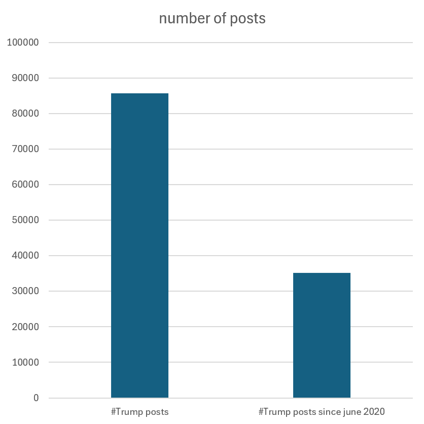

Data Collection and Wrangling
This section focuses on our approach for data collection and processing. We outline how we gathered the data used for our project, how we handled the data and how we assigned topics to tweets and markets.
Data Collection
Polymarket Data
We downloaded historical Polymarket data from the following publicly available dataset: Polymarket dataset on Hugging Face .
- 107GB dataset containing all historical data until early 2026
-
markets.parquet: Market information (question, creation time, etc.) -
quant.parquet: Market prices (unified YES perspective)
Example entries from the markets.parquet dataset:
Since our goal is to investigate whether Donald Trump's social media activity correlates with changes in polymarket prediction market prices, we require both the underlying market questions and their historical price movements.
The markets.parquet file provides the market metadata, including the questions needed to identify and match markets with social media posts on the same topics.
The quant.parquet file contains the corresponding historical price data together with timestamps, allowing us to analyze price movements over time.
As the dataset contains Polymarket trading data up to early 2026, it provides all the polymarket data required for our analysis.
Data Collection
Donald Trump post history
For the post history of Donald Trump we downloaded an already existing dataset from https://datadrivendecisionlab.com/resources?resource=trump-tweets-dataset , which provided posts from 2009 to the end of 2025. To get more recent posts from Truth Social, we wrote a simple scraper in Python using Selenium. The final data was scraped on June 10, and we scraped posts going back to December 25 to complete missing data. Two weeks after the last time the scraper was used, the RUB network was fingerprinted by Cloudflare and we could not gather more recent posts.
The scraper we built uses Selenium (a browser automation and testing tool) and Beautiful Soup (an HTML parsing library), to automatically visit Twitter and Truth Social. We needed both Selenium and Beautiful Soup even though we expected that one should have been enough. Selenium was used in the non-headless mode to further prevent fingerprinting and prevention by the cloudflare bot protection and Beautiful Soup was used for parsing, because we had some problems searching for specific HTML DOM elements while using Selenium. The scraper for Twitter goes through the already downloaded dataset and completes tweets which may be cut short, because of the old character limit, by visiting the tweet directly via its id. The Truth Social scraper starts on Donald Trump's (or, configurably, any other persons') post history and goes through it, beginning with the newest post. While doing so it filters out advertised posts and saves relevant information in a seperate CSV File, which was subsequently merged with the existing dataset.
Data Processing
What we did with the collected data:- Converted the different timestamps into one timezone
- Filtered out posts with only videos, images, or retweets
- Merged the scraped posts with the downloaded dataset
- Assigned topics to each market and post using ML
- Entered both the post and market data into a topic database for correlelation analysis
The first three steps were performed in one script. We standardised all timestamps into GMT (UTC+0). The downloaded post dataset was using UTC+1, while the Truth Social data was UTC-4 / UTC-5 depending on the season. To reduce time related mistakes, the Pendulum Python library was used for conversion.
We then filtered out posts which only contained images or videos, identified by the string "[Image]" or "[Video]" inside the CSV Post text field. We chose to exclude those since topic labelling images and videos is out of scope for our project, and we did not have the bandwidth or storage to scrape rich content.
We also decided to exclude retweets which have no added content by the retweeter, we internaly called those pure retweets. These were chosen to be excluded to isolate our analysis social media activity that is solely the original activity of the president.
After the filtering and conversion was finished the two CSV files were joined together. The resulting CSV was stored in the GitHub repository.
The CSV contains around 85700 Posts, but only around 35000 are useful for us since the majority of Trump's posts were posted before Polymarket was founded in June of 2020.
